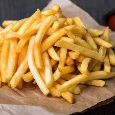

Papas a la francesa

Esta receta es acerca de como hacer unas papas a la francesa crujientes en fa
- Cortar las papas en la forma que deseeamos
- En un tazon con agua meter las papas 1h o 30min
- Sacar las papas y secarlas
- Agregar maicena a las papas
- Calentar el aceite en un sarten u olla
- Cocinar las papas hasta que queden dordas
- Quitar el exceso de aceite de las papas y agregar sal
Home